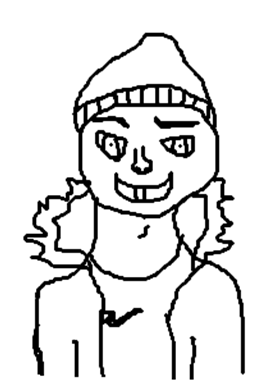

Draudzējies ar centrikiem un krāj punktus!
Nospied pogu “Savākt punktu”, lai iegūtu punktu. Signāla skaņu vari noklausīties audio atskaņotājā.

Nospied pogu, lai iegūtu punktu.
Noklausies signāla skaņu, nospiežot audio atskaņotāja pogu.
Punkti: 0